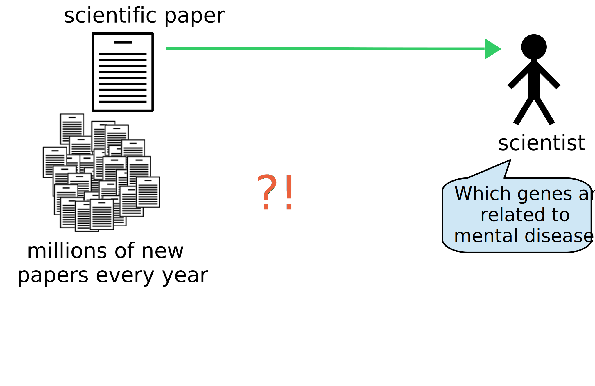
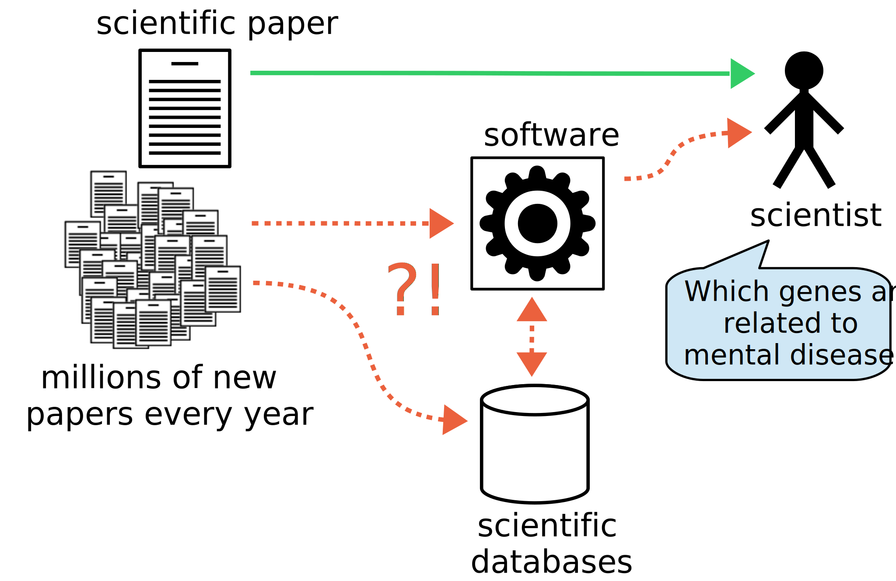
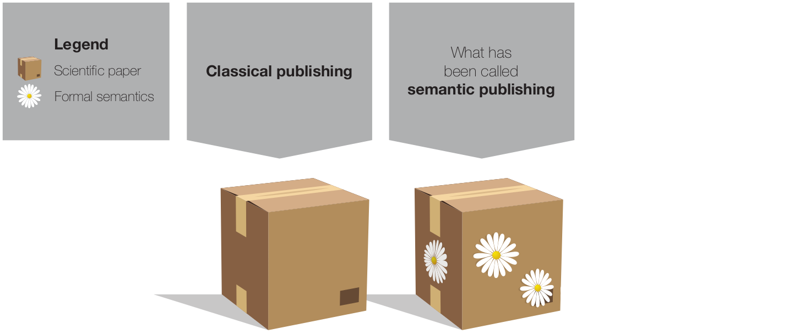

FAIR Data and Semantic Publishing
Tobias Kuhn
Guest Lecture for Introduction Data Science Course
VU Amsterdam
8 October 2018
These Slides: https://tinyurl.com/introds2018fair
FAIR
The FAIR Guiding Principles:
- Findable
- Accessible
- Interoperable
- Reusable
Mark Wilkinson et al. The FAIR Guiding Principles for scientific data management and stewardship. Scientific Data, 3(160018), 2016.
Findable
- F1. (meta)data are assigned a globally unique and persistent identifier
- F2. data are described with rich metadata (defined by R1 below)
- F3. metadata clearly and explicitly include the identifier of the data it describes
- F4. (meta)data are registered or indexed in a searchable resource
Accessible
- A1. (meta)data are retrievable by their identifier using a standardized communications protocol
- A1.1 the protocol is open, free, and universally implementable
- A1.2 the protocol allows for an authentication and authorization procedure, where necessary
- A2. metadata are accessible, even when the data are no longer available
Interoperable
- I1. (meta)data use a formal, accessible, shared, and broadly applicable language for knowledge representation.
- I2. (meta)data use vocabularies that follow FAIR principles
- I3. (meta)data include qualified references to other (meta)data
Reusable
- R1. meta(data) are richly described with a plurality of accurate and relevant attributes
- R1.1. (meta)data are released with a clear and accessible data usage license
- R1.2. (meta)data are associated with detailed provenance
- R1.3. (meta)data meet domain-relevant community standards
Scientific Papers are Data Too!
Scientific Papers:
Optimized for Reading Single Work

Scientific Papers:
Bad for Getting More General View

Scientific Papers:
Unused Potential of Software/Databases

Classical Publishing
"Semantic Publishing"
Genuine Semantic Publishing

Nanopublications